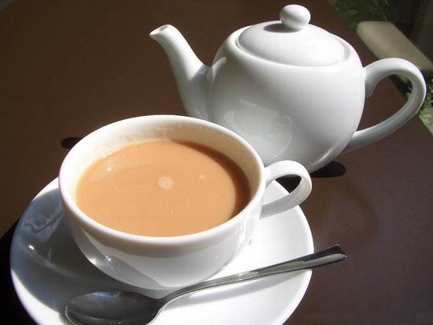

Spiced Tea

This recipe shows yoi how to make a traditional somali black tea infused with spices
Ingredients
- Black tea bags
- Boiling Water
- Spice mix (Cinnamon poweder, Cardamom, Ginger,
- Milk
- Sugar
Steps
- Boil water
- prepare cup by adding sugar, spices and tea bag
- add hot water to cup
- add a splash of milk
- Enjoy!